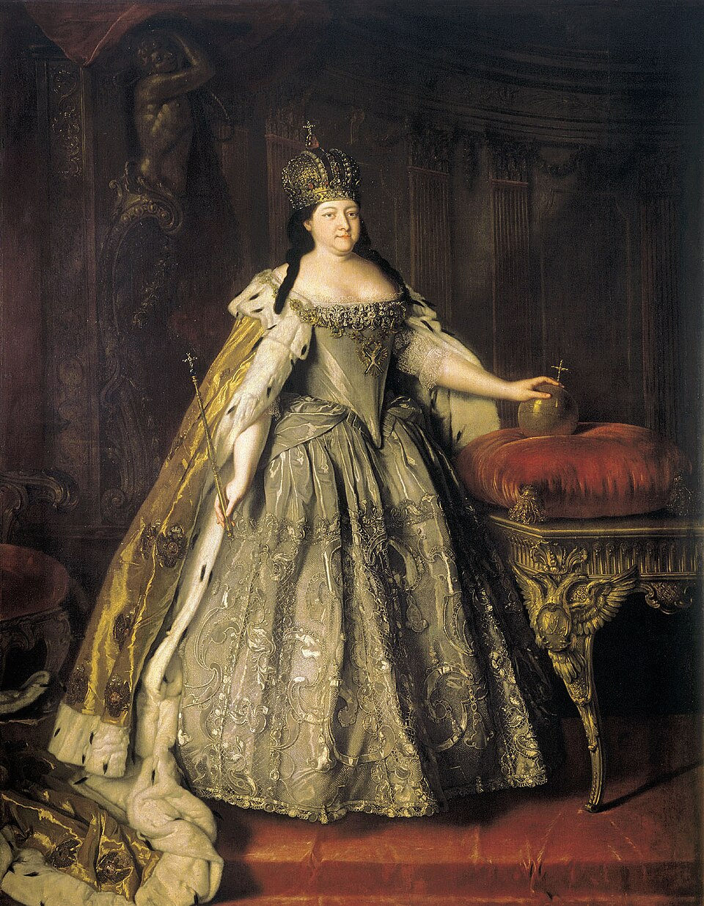

Анна Иоанновна — российская императрица, племянница Петра I и дочь царя Ивана V. Она вступила на престол в 1730 году после смерти Петра II и правила Российской империей в течение десяти лет.
Перед восшествием на престол Верховный тайный совет попытался ограничить власть Анны специальными условиями — «Кондициями». Однако, опираясь на поддержку дворянства и гвардии, Анна Иоанновна отказалась выполнять эти ограничения и восстановила самодержавие.
Во время её правления большое влияние при дворе получили иностранные приближённые, особенно Эрнст Бирон. Этот период в истории получил название «бироновщина». Многие современники считали, что иностранцы занимали слишком важные государственные должности.
Несмотря на критику, при Анне Иоанновне продолжалось развитие армии и флота, укреплялась система государственного управления, строились новые предприятия и укреплялись границы Российской империи.
В годы её правления Россия участвовала в русско-турецкой войне 1735–1739 годов. Русская армия добилась ряда побед и усилила своё влияние на южных территориях.
Анна Иоанновна вошла в историю как правительница эпохи дворцовых переворотов. Её правление стало важным этапом укрепления императорской власти и дальнейшего развития Российской империи в XVIII веке.
